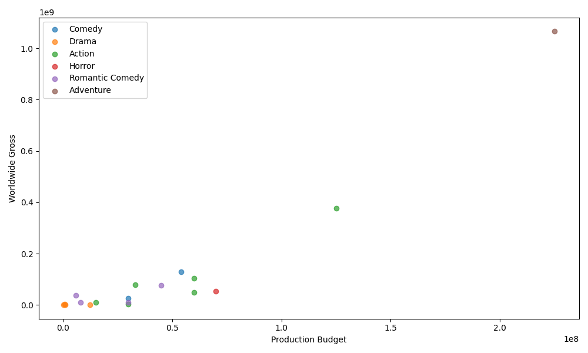
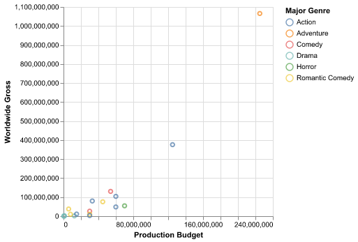
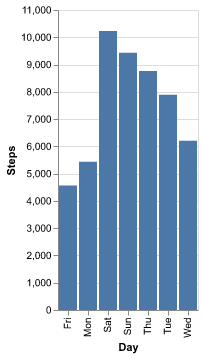

从画图理解声明式编程：Altair 的三块积木
引子：两个画图程序员的对话
假设你要画一张散点图：横轴是电影制作预算，纵轴是全球票房，每个点按类型着色。
以下是 18 部电影的数据，保存为 /tmp/movies.csv 。在 Org-mode 中按 C-c C-v t 生成文件，或直接复制数据手动创建：
Title,Production Budget,Worldwide Gross,Major Genre,IMDB Rating,MPAA Rating The Whole Ten Yards,30000000.0,26323969.0,Comedy,5.1,PG-13 Dream With The Fishes,1000000.0,542909.0,Drama,6.6,R Godzilla,125000000.0,376000000.0,Action,4.8,PG-13 Exit Wounds,33000000.0,79958599.0,Action,5.2,R Doom,70000000.0,54612337.0,Horror,5.2,R The Avengers,60000000.0,48585416.0,Action,3.4,PG-13 First Daughter,30000000.0,10419084.0,Romantic Comedy,4.7,PG Raising Victor Vargas,800000.0,2811439.0,Drama,7.1,R Tin Cup,45000000.0,75854588.0,Romantic Comedy,6.1,R Pirates of the Caribbean: Dead Man's Chest,225000000.0,1065659812.0,Adventure,7.3,PG-13 Fighting Tommy Riley,300000.0,10514.0,Drama,6.6,R The Funeral,12500000.0,1412799.0,Drama,6.4,R Under Siege 2: Dark Territory,60000000.0,104324083.0,Action,5.1,R Banlieue 13,15000000.0,11208291.0,Action,7.1,R "You, Me and Dupree",54000000.0,130402010.0,Comedy,6.1,PG-13 Supercross,30000000.0,3252550.0,Action,2.9,PG-13 Emma,5900000.0,37831658.0,Romantic Comedy,6.8,PG Woman on Top,8000000.0,10192613.0,Romantic Comedy,4.9,R
用 Matplotlib 写：
import matplotlib matplotlib.use('Agg') import matplotlib.pyplot as plt import pandas as pd movies = pd.read_csv("/tmp/movies.csv") fig, ax = plt.subplots(figsize=(10, 6)) for genre in movies["Major Genre"].unique(): subset = movies[movies["Major Genre"] == genre] ax.scatter(subset["Production Budget"], subset["Worldwide Gross"], label=genre, alpha=0.7) ax.set_xlabel("Production Budget") ax.set_ylabel("Worldwide Gross") ax.legend() plt.tight_layout() plt.savefig("images/matplotlib-scatter.png") plt.close() print("images/matplotlib-scatter.png", end="")

用 Altair 写：
import altair as alt import pandas as pd movies = pd.read_csv("/tmp/movies.csv") chart = alt.Chart(movies).mark_point().encode( x="Production Budget:Q", y="Worldwide Gross:Q", color="Major Genre:N" ) chart.save("images/altair-basic.png") print("images/altair-basic.png", end="")

两段代码做了同一件事，但思维方式完全不同。Matplotlib 是命令式的：你一步步告诉它 "创建画布 → 添加坐标轴 → 遍历数据 → 画点 → 设标签 → 加图例 → 调整布局"。代码是你的操作清单。Altair 是声明式的：你告诉它 "数据在这里，横轴是制作预算，纵轴是票房，按类型着色"。剩下的事情：坐标轴范围、刻度位置、图例排列、颜色映射：Altair 自己决定。
这两种范式差异的实质是 描述意图（what）vs 控制过程（how） ，不是 "哪个库更方便" 的技术选型问题。
Altair 的三块积木：Data→Mark→Encode
Altair 的每个图表都遵循同一个模式，由三个部分组成：
alt.Chart(数据).mark_形状().encode(列 → 视觉属性的映射)
用更直观的说法：
- Data ：你的数据 ： 一个 pandas DataFrame
- Mark ：你想要的视觉形状 ： 柱状条（mark_bar）、点（mark_point）、线（mark_line）、弧（mark_arc）
- Encode ：数据列到视觉属性的映射 ： 哪列放 X 轴、哪列染色、哪列控制点的大小
拿一周每日步数数据试一下：
import altair as alt import pandas as pd steps = pd.DataFrame({ "Day": ["Mon", "Tue", "Wed", "Thu", "Fri", "Sat", "Sun"], "Steps": [5432, 7890, 6210, 8765, 4567, 10234, 9430] }) weekly_steps = alt.Chart(steps).mark_bar().encode( x="Day:O", y="Steps:Q" ) weekly_steps.save("images/altair-weekly.png") print("images/altair-weekly.png", end="")

这段代码在 Jupyter Notebook 中会生成一张柱状图，X 轴是星期，Y 轴是步数。
这种声明式写法的核心特点就是：每行代码都在描述数据的一个维度，而不是在操作图表的一个部件。
你其实早就用过声明式
Altair 的 Data→Mark→Encode 不是独创。声明式编程你可能每天都在用，只是没意识到它属于同一个范式。
SQL：声明式语言的代表
SELECT department, AVG(salary) FROM employees WHERE years_of_experience > 3 GROUP BY department HAVING AVG(salary) > 50000
你描述你要什么：各部门中工龄 3 年以上员工的平均薪资，只显示平均薪资超过 5 万的部门。数据库自己决定用哪个索引、什么连接顺序、怎么并行执行。
SQL 和 Altair 共享同一个核心哲学： 你描述结果，系统选择路径 。
正则表达式：用模式匹配替代过程
^\d{3}-\d{2}-\d{4}$ 就是一个声明："我要一个 XXX-XX-XXXX 格式的字符串"。你不需要写循环逐字符检查，正则引擎帮你做。
Clojure 的 core.logic
函数式语言中的逻辑编程库更是直接把 "声明约束条件" 作为核心范式：
(run* [q] (membero q [1 2 3]) (membero q [2 3 4])) ;; => (2 3)
你不是在写 "遍历第一个列表，对每个元素检查是否在第二个列表中"。你只是在声明约束条件："q 要在第一个列表中，也要在第二个列表中"。然后 core.logic 自己找出所有满足条件的 q。
这些例子的共同模式是： 你描述问题，而不是实现方案 。
什么时候不该用声明式
声明式不是银弹。Altair 和声明式编程都有适用范围：
像素级定制
当你要精确控制每个元素的颜色值、字体大小、位置偏移时，声明式的 "自动推断" 就成了障碍。Altair 允许覆盖默认值，但语法会更啰嗦，而且失去声明式的简洁感。这种场景 Matplotlib 仍是更好的选择。
3D 可视化
Altair 严格 2D。需要 3D 图得回 Matplotlib 或 Plotly。声明式通常不擅长处理 "非常规" 的视觉映射。
大数据集
Altair 把数据嵌入图表规范为 JSON，超过 5000 行会触发 MaxRowsError 。解决方案有 VegaFusion（服务端聚合）或通过 URL 传递数据，但相比 Matplotlib 的直接渲染，额外步骤不少。
这就像用 SQL 做复杂的数据清洗：虽然也能做，但用 Python 写个循环可能更直接。声明式在你需要 "标准做法的 80%" 时最高效，剩下 20% 的非常规需求可能反而更费力。
总结
Altair 用一个简单的模式（Data→Mark→Encode）展示了声明式编程在数据可视化中的力量。它的每个例子都遵循一个原则： 描述数据，而不是操作图表 。
这个原则你早就见过：SQL 声明你要什么数据而不说怎么查，正则描述文本模式而不写逐字符匹配的循环，Clojure core.logic 声明约束条件而不写遍历逻辑。
声明式的价值不是省几行代码，而是让代码表达意图而非实现细节。当你能用一句 color="Major Genre:N" 而不是一个 for 循环加 ax.scatter() 来做同一件事时，你就能腾出精力去想真正重要的问题：数据在说什么。